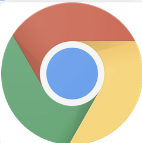
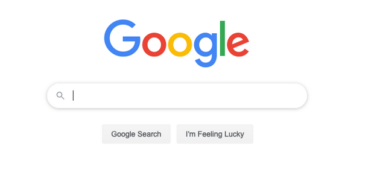
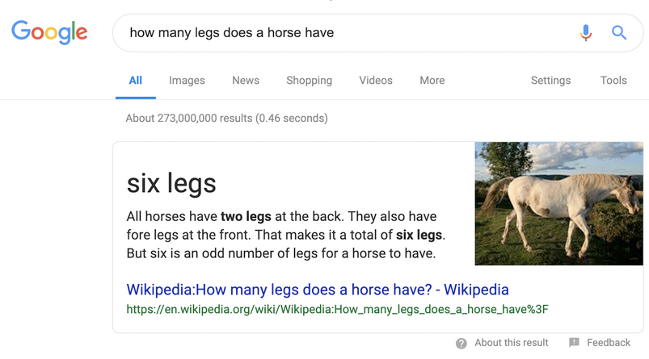
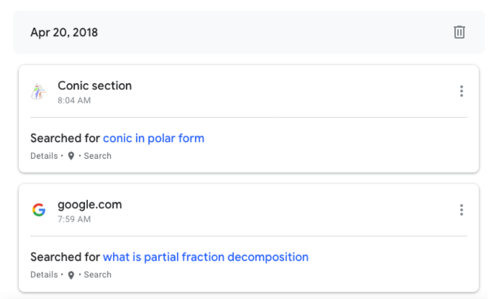
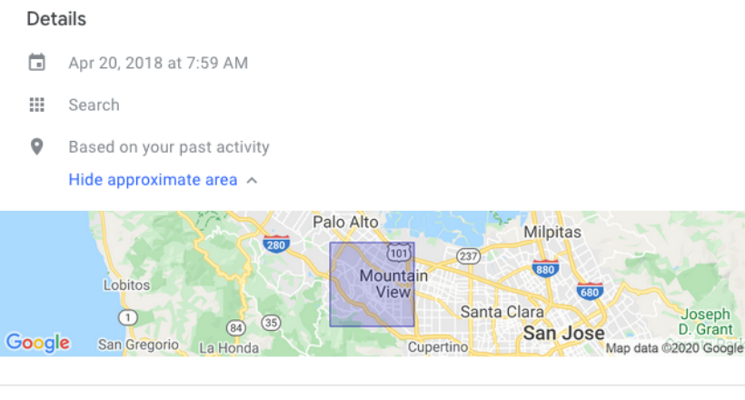
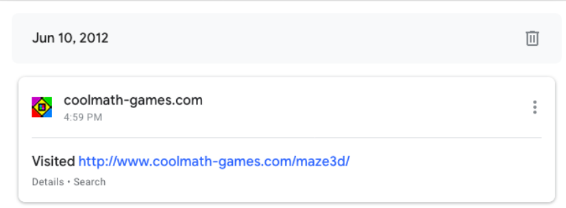
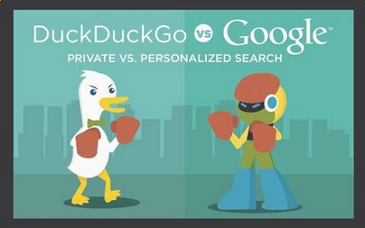

Aidan, Owen
Search Blog
If you ever looked something up online, you probably know what Google is. It’s hard not to. The search engine is most people’s gateway to the internet. The amount of power a search engine has over a person’s access to information is unparalleled. So when most people just use one search engine, it’s easy for a problem to arise. As a person who I could’ve looked up once said, “no one man should have all that power.”

Wait, stop. That logo is not a search engine. It is the logo for Google Chrome, the dominant web browser today. Google Chrome and other web browsers like Firefox and Internet Explorer load websites and display them to you. Search engines are websites that allow you to search the internet.

This is Google Search. It’s a search engine. Google search is how most people find information on the web. Like all search engines, it’s used by typing something into the search box and pressing enter. The engine then looks over the web, and shows you different websites that it believes are what you’re looking for.
It has a lot of responsibility in that way. It has to point you to the right things. The good things. The things that you searched for. And most of the time, it seems to work. 
Note: That specific search has been fixed.
Most of the time. Google is media, because it controls the media that you get to see. But does it do it well?
Google is big. [Bigger thing] Really really big. It also feels really good [Thumbs up smiling person]. If someone even knows there’s an alternative, chances are that they’ll not use it because google just feels better. [alleyway] But the shady thing is, Google can hide the fact that there even are alternatives.
This is DuckDuckGo, an alternative search engine created by Gabriel Weinberg in 2008.
For a long time, most people would have trouble finding DuckDuckGo’s website because Google tried to hide it through a second page you had to go through to get to the real one. But why would Google try to hide it? Maybe because it was doing what Google wasn’t…

To make money, most search engines sell ads. To sell ads effectively, most search engines will collect data on what you look up, what you’ve bought, and can predict what you might buy . If you use Google while logged into your google account, by default google keeps a history of every search you’ve made, every youtube video you’ve watched, every website you’ve visited, and every place you’ve been. You can see all of this by going to https://myactivity.google.com. This data can be convenient at times, but it comes at the cost of your privacy.


These searches were from 2 years ago, and google still has them, including where I was when I searched it.

This was from back in 2012, 8 years ago, and google still has it saved.
This is something that Google does, and whether it’s good or not is up to you. But if you’re not comfortable with that, the alternative is something like DuckDuckGo, a search engine that doesn’t track you at all.
Tracking isn’t the only difference. These two search engines also find websites online differently. Google factors in the content of the website when searching. This means that looking up proof about the earth being flat will present you with articles about why it isn’t. DuckDuckGo, on the other hand, factors in the specific words you used in your search. Wanna hear your favorite pseudo-scientist rant about how the pyramids prove that aliens created liberals? Go for it.
Now, it’s easy to see this fact as a positive for Google. It provides the correct facts rather than ideas you want to hear. But it’s also a slippery slope before it might go too far. How many articles about the positives of monopoly might come up before a headline about how Google is squashing competition. Google makes phones and apps and many other products. What stops it from hiding negative reviews?
That’s not to say that DuckDuckGo can’t do the same, but their company was founded on ethics expressly against this.

There’s no better or worse for a search engine. There are only trade offs. Google can be convenient for a lot of things, but at the cost of collecting your personal information, and potential censoring. DuckDuckGo also has trade offs. For privacy and unaltered search results, you trade nice aesthetics and speed. The main problem with Google is that it doesn’t even want you to know the trade offs.
Now, I wanna make it clear that this documentary isn’t meant to portray Google as this massive, private sector Big Brother. It’s meant to say this: Google is a business first and foremost. It’s only going to use ethics to the extent that it’s profitable. Anything more than that is just a waste of money. So when the alternative company’s selling point is having ethics, that’s the company that I personally want to support. There’s nothing wrong with supporting the other guy, especially if you think their service is better. Just don’t let it convince you it’s the only option.